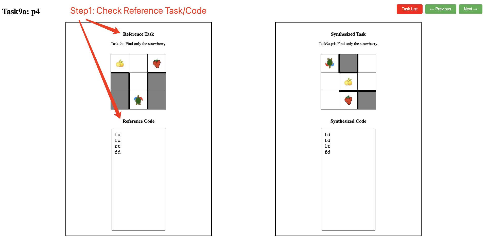
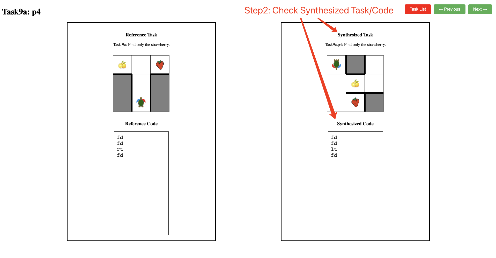

In this study, we aim to evaluate the quality of automatically synthesized tasks and their solution codes for the category of XLogo Mini. We have picked 30 reference tasks from the XLogo Mini platform and synthesized 6 tasks for each of them. We would like to survey the quality of each of these synthesized tasks compared to their reference task.
The survey has 3 steps and they are described below.
We present one of the reference tasks and its solution code on the left panel of the page. The task is presented below the “Reference Task” header and its solution code is presented under the “Reference Code” header. Carefully view the task and its solution code.
We present a synthesized task and its solution code, for the given reference task, on the right panel. The task is presented below the “Synthesized Task” header and its solution code is presented under the “Synthesized Code” header. Carefully view the task and its solution code.
You are provided with a google sheet ($NAME_expertFeedback_$DATE.xlxs) with the survey questions to be answered for each synthesized task. Each row in the sheet corresponds to a specific synthesized task. For each task, we present 6 questions. These questions must be answered on a 3-point Likert scale. The rating can be picked from the given dropdown menu in each cell of the google sheet.
We describe each question below.
1. Please make sure that the task id (e.g., task18.p5) on the webpage matches the task id on the google sheet, while filling in the survey for a specific task.
2. It would be more convenient to keep two pages open side-by-side: the webpage which describes each task and the google sheet to enter the rating for the task.